그래서!
“잘 맞는 사람,
억지로 만들지 않아요”
"억지스러운 끼워맞추기가 아닌, 알고리즘이 찾아낸 높은 확률의 설렘."
Why Link Mate?
선택지는 많아졌지만,
왜 기다림은 사라졌을까요?
빠른 매칭과 즉각적인 결과를 요구하는
환경은 관계를 "과정"이 아닌"결과"로 소비하게 만듭니다.
연결은 많아졌지만,
왜 관계는 가벼워졌을까요?
빠른 선택과 즉각적인 반응속에서
사람은 점점 "조건"으로
분류되고 있습니다.
만남은 쉬워졌지만,
왜 이해는 부족해졌을까요?
사진과 몇개의 정보만으로사람을
판단하는 구조는 관계를 "단순"하게 만듭니다.
대화는 늘어났지만,
왜 진심은 소외되었을까요?
텍스트보다 우리에겐 서로의 결을 읽어낼 수 있는 깊은 호흡의 "시간"이필요합니다
무작위가 아닌,
기준 있는 연결을
설계합니다.

관계의 속도에 맞춘
안전한 대화 환경을
제공합니다.

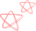그래서!
LinkMate는 어떤 "기준"으로 설계하나요?
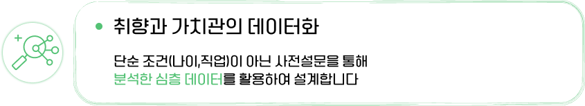
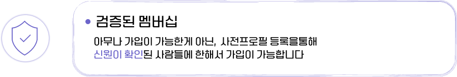
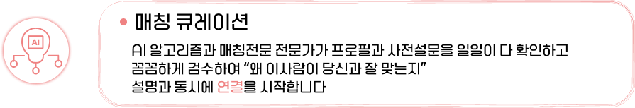
그래서!
LinkMate는 “안전” 한가요?
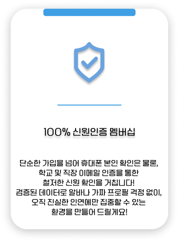
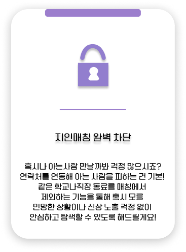
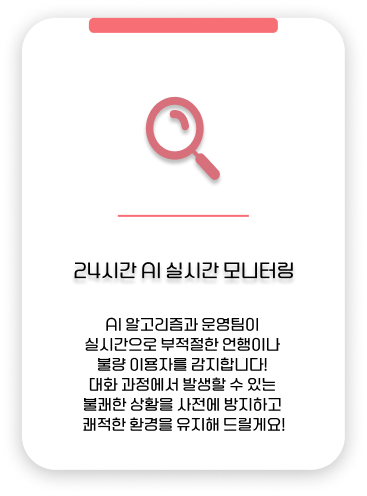
가 약속하는 3중 안전장치
그래서!
LinkMate는 연결의 “과정”이 어떻게 되어있나요?
Step 01.탐색:
직접적인 노출을 최소화 하기 위해
먼저 서로의 가치관 카드 확인!
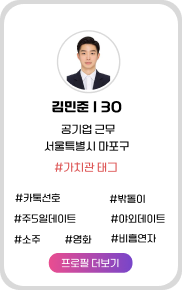
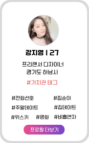
Step 02.대화:
바로 만나는게 아닌,
서비스 내 보호된 환경에서
충분히 대화먼저 해보세요!
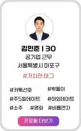
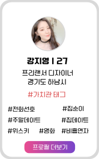
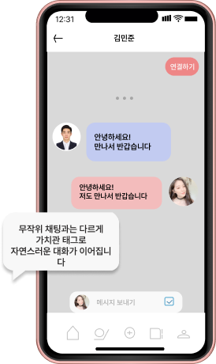
Step 03.만남:
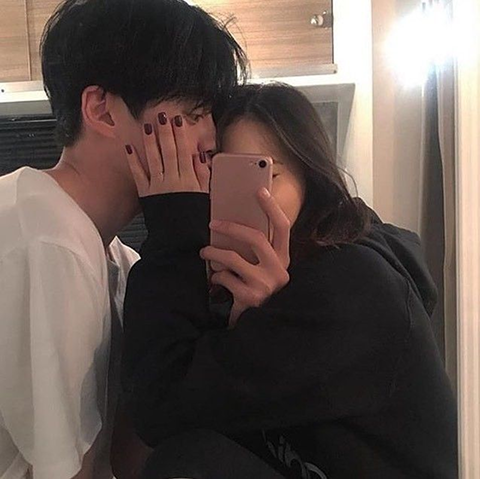